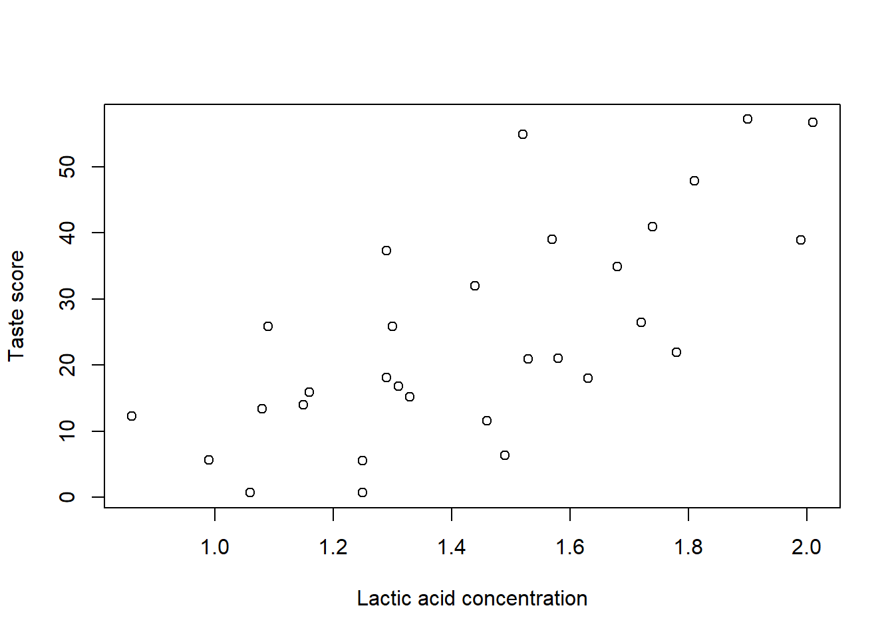
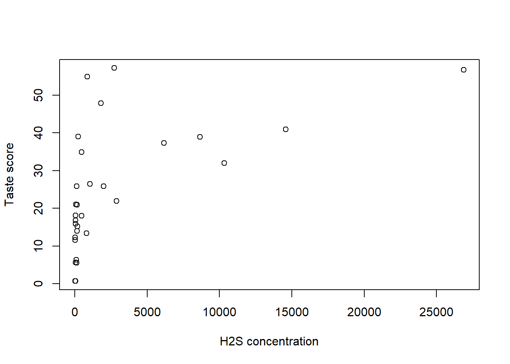
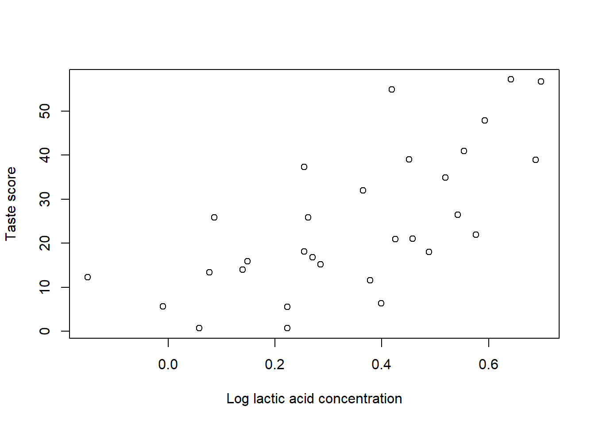
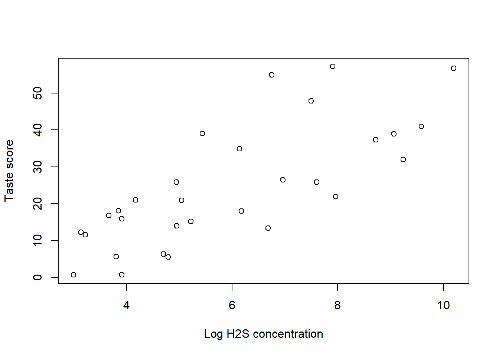

5 Solution
5.1 Task 1
# taste vs lactic acid
plot(Taste ~ Lactic.Acid, data = cheese, xlab = "Lactic acid concentration", ylab = "Taste score")
# taste vs H2S
plot(Taste ~ H2S, data = cheese, xlab = "H2S concentration", ylab = "Taste score")
# taste vs log(lactic acid)
plot(Taste ~ log(Lactic.Acid), data = cheese, xlab = "Log lactic acid concentration", ylab = "Taste score")
# taste vs log(H2S)
plot(Taste ~ log(H2S), data = cheese, xlab = "Log H2S concentration", ylab = "Taste score")
- Based on the above four plots, it is clear that log(H2S) is preferred over H2S in explaining Taste. The difference between Lactic Acid and log(Lactic Acid)) is little and therefore we will select the original variable Lactic Acid as the predictor.
To build a multiple linear regression between Taste (as the response) and Lactic Acid and log(H2S) (as the predictors), we use
model <- lm(Taste ~ Lactic.Acid + log(H2S), data=cheese)
summary(model)##
## Call:
## lm(formula = Taste ~ Lactic.Acid + log(H2S), data = cheese)
##
## Residuals:
## Min 1Q Median 3Q Max
## -17.343 -6.530 -1.164 4.844 25.618
##
## Coefficients:
## Estimate Std. Error t value Pr(>|t|)
## (Intercept) -27.592 8.982 -3.072 0.00481 **
## Lactic.Acid 19.887 7.959 2.499 0.01885 *
## log(H2S) 3.946 1.136 3.475 0.00174 **
## ---
## Signif. codes: 0 '***' 0.001 '**' 0.01 '*' 0.05 '.' 0.1 ' ' 1
##
## Residual standard error: 9.942 on 27 degrees of freedom
## Multiple R-squared: 0.6517, Adjusted R-squared: 0.6259
## F-statistic: 25.26 on 2 and 27 DF, p-value: 6.551e-07When Lactic Acid and log(H2S) are both zero, the mean cheese taste score is \(-27.59\). The mean cheese taste score increases by \(19.89\) when Lactic.Acid increases by one unit and all other predictors are held constant. The mean cheese taste score increases by \(3.95\) when log(H2S) increases by one unit and all other predictors are held constant.
## [,1]
## (Intercept) -27.591815
## Lactic.Acid 19.887204
## log(H2S) 3.946267## (Intercept) Lactic.Acid log(H2S)
## -27.591815 19.887204 3.946267# calculate according to the formula
YtY <- t(Y) %*% Y
RSS <- YtY - t(XtY) %*% beta.hat
sigma2_hat <- RSS/(nrow(cheese)-3)
sigma2_hat## [,1]
## [1,] 98.85057# from R output
summary(model)$sigma## [1] 9.942362